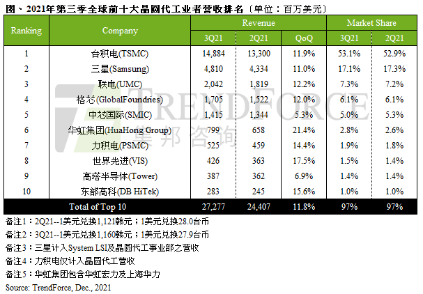

Market Trends
Foundry Revenue Rises by 12% QoQ for 3Q21 Thanks to Peak Season, New Production Capacity, and Rising Prices (TrendForce 2021-12-02)
Although the demand for end products related to the stay-at-home economy slowed down as many countries saw rising vaccination rates and were partially lifting social distancing restrictions, the decline in foundry orders from this source was more than offset by the traditional peak season for smartphones, according to TrendForce’s latest investigations. At the same time, OEMs for notebook (laptop) computers, networking devices, automotive electronics, and IoT devices kept vigorously building up their inventories because the earlier capacity crunch in the foundry market was constraining them from reaching their shipment targets. Because of these developments, demand continued to outstrip supply in the foundry market during 3Q21. As for foundries, they have been gradually taking on new production capacity in the recent period and gaining from the ongoing rise in the ASP. Thanks to robust demand, new production capacity, and rising wafer prices, the quarterly total foundry revenue rose by 11.8% QoQ to reach a new record high of US$27.28 billion for 3Q21. This result indicated nine consecutive quarters of revenue growth.
Top four foundries posted double-digit revenue growth for 3Q21 due to peak season for smartphones; SMIC’s revenue growth was slightly limited by restrictions imposed on its capacity expansions
…………
Second- and third-tier foundries posted higher revenue growth rates compared with first-tier counterparts because of strong demand for mature nodes
…………
传统旺季、新增产能与涨价效应加乘，第三季晶圆代工产值季增11.8%(集邦咨询 2021-12-02)
由于疫苗普及率逐渐提升，各国陆续实施有限度的边境开放措施，导致宅经济相关终端产品需求放缓而出现订单下修的杂音，适逢智能手机传统旺季，加上笔电、网络通讯、汽车、或其他物联网产品等，先前受到晶圆代工产能短缺而无法满足出货目标的产品维持强劲备货力道，因此整体晶圆代工产能仍呈现供不应求景况。随着晶圆代工厂新增产能逐步放量，以及平均售价持续拉涨带动，第三季晶圆代工产值高达272.8亿美元，季增11.8%，已连续九个季度创下历史新高。
智能手机旺季驱动前四大晶圆厂季增幅冲出双位数
…………
成熟制程需求旺，二三线晶圆代工厂季增幅更胜龙头厂
…………

DRAM Industry’s Revenue Rises by 10% QoQ for 3Q21 Thanks to Slight Shipment Growth and Ongoing Quote Hikes (TrendForce 2021-11-16)
DRAM buyers were aggressively stocking up during 1H21 because quotes began to rise at the start of the year, and there were concerns about shortages in the supply chain, according to TrendForce’s latest investigations. To avoid the risk of a supply crunch, most DRAM buyers kept raising their demand until the middle of the year. Moving into this second half of the year, the COVID-19 pandemic has exacerbated component gaps, the adverse effect of which on OEMs’ ability to assemble their end products has widened as well. Due to having a glut of memory and a shortage of other key components, some OEMs have opted to scale back DRAM procurement. PC OEMs have especially become noticeably restrained in this regard. Fortunately, the server-related segment of the market has been propping up the overall demand; and because of this, most DRAM suppliers were able to post a marginal growth in shipments for 3Q21. Additionally, quotes for DRAM product also kept rising in 3Q21. On account of these factors, the quarterly total DRAM revenue rose again by 10.2% QoQ to US$26.6 billion for 3Q21.
Regarding 4Q21, DRAM buyers that are already carrying a high level of inventory will probably adopt an even more conservative stance, as OEMs are still affected by component gaps in the supply chain while also preparing for stock-taking at the end of the year. Without adequate demand for support, DRAM prices on the whole are going to make a downward turn in 4Q21 and thereby end this short three-quarter period of cyclical price upturn. Also, since 4Q21 is going to be the first quarter in the general downtrend in quotes, buyers anticipate further price reductions in the future and are more reluctant to stock up in the near term. Declines in quotes will continue to widen as a result. With demand shrinking and prices falling, the DRAM industry will inevitably experience a drop in revenue as well.
DRAM suppliers saw higher profits in 3Q21 because of rising prices and growth in output shares of more advanced process technologies
…………
While the specialty DRAM market weakened in 3Q21, Taiwanese suppliers trailed closely behind the three dominant suppliers
…………
出货小幅上扬及DRAM报价持续走升，第三季整体DRAM产值季成长达10%(集邦咨询 2021-11-16)
今年初以来因DRAM报价翻涨以及供应链缺料，多数采购为避免断货而不断扩大拉货，使得需求端至年中持续强劲。然而，因疫情导致的零部件长短料的问题对于终端产品组装的冲击也逐渐加剧，促使部分厂商开始减少购买相对长料的存储器，尤其以PC OEMs业者的态度最为明显。不过所幸服务器端的需求仍相对有所支撑，带动多数DRAM供应商第三季出货仍有小幅增长，加上DRAM报价走扬，推升第三季DRAM总产值仍有10.2%的季成长，达266亿美元。
展望第四季，在供应链问题持续纷扰，以及年底库存盘点即将来临的双重压力下，DRAM库存偏高的买方在采购力道上恐怕更为缩手，进而导致DRAM价格失去支撑，甚至反转下跌，结束仅三季的上涨周期。此外，由于第四季将是DRAM报价下跌的首季，买方在认为后续价格只会更低的预期心理下，采买意愿恐怕更加低迷，进而扩大后续报价的跌势，恐连带影响到后续产值表现。
DRAM第三季价格上升、先进制程比重拉高，众原厂获利水平持续进步
…………
第三季Specialty DRAM市况走弱，台系厂商业绩表现略亚于三大原厂
…………
Outlook: DRAM, NAND, Next-Gen Memory (semiengineering 2021-11-18)
…………
SE: How would you characterize the DRAM market thus far in 2021?
Handy: DRAM is doing very well. Some folks point to the fact that spot market prices have been declining since mid-year, but they are ignoring the fact that they are coming off a peak, since prices had a big run-up from September 2019 to April 2021, rising 75% to $4.35/GB. Now, they’re back down at $3.30, but that’s still 33% above the 2019 low point. There’s not a big glut, and we don’t see the kind of inventory build-up that caused 2019’s price collapse. So, as long as demand maintains its current course, it’s reasonable to expect the market to be flat to a little up next year. Our expectation for 2021 is for DRAM revenues to reach $86 billion. The entire chip market didn’t reach that size until 1994.
…………
SE: What about STT-MRAM?
Handy: We see MRAM, or possibly another competing technology, growing to about $4 billion by 2031, mainly based on its use as the embedded memory in SoCs. Although MRAM today has the lead over other SoC emerging memory technologies, it’s still too early to tell if this market might fall to another technology. There are certainly lots of contenders, and we believe that we have evaluated all of them. The big driver for this is the problem with NOR flash and, to a lesser degree, with SRAM. NOR hits a scaling limit at 28nm, since nobody’s developed a way to make a finFET-based NOR cell. If you need an NVM at sub-28nm processes, then it has to be something else. The problem with SRAM is a little different: SRAM doesn’t scale linearly with the process. This means that a microprocessor that’s 50% SRAM at 28nm might be 65% SRAM at 14nm and maybe 80% SRAM at 10nm, and the die size won’t shrink by all that much, making the chip more costly than desired. This will drive SRAM to eventually be replaced as well. When that happens, it will make caches, and eventually registers, persistent, and whole new ways of computing and software design will be the result. This should be very positive for power consumption.
Vendor News
Samsung Develops Industry’s First LPDDR5X DRAM(Samsung 2021-11-09)
Samsung Electronics announced that it has developed the industry’s first 14-nanometer (nm) based 16-gigabit (Gb) Low Power Double Data Rate 5X (LPDDR5X) DRAM, designed to drive further growth throughout the high-speed data service applications including 5G, artificial intelligence (AI) and the metaverse.
Samsung’s LPDDR5X is a next-generation mobile DRAM designed to significantly boost speed, capacity and power savings for future 5G applications. In 2018, Samsung delivered the industry’s first 8Gb LPDDR5 DRAM and today, the company is aggressively moving beyond mobile markets with the first 16Gb LPDDR5X DRAM.
The LPDDR5X DRAM will offer data processing speeds of up to 8.5 gigabits per second (Gbps), which are over 1.3 times faster than LPDDR5’s 6.4Gbps. Leveraging the industry’s most advanced 14nm DRAM process technology, it will also use around 20% less power than LPDDR5 memory. In addition, the 16Gb LPDDR5X chip will enable up to 64 gigabytes (GB) per memory package, accommodating increasing demand for higher-capacity mobile DRAM worldwide.
…………
Micron LPDDR5X DRAM to Feature in MediaTek Dimensity 9000(Nasdaq 2021-11-22)
Micron Technology, Inc. (MU) revealed that its low-power double data rate 5X (LPDDR5X) DRAM for MediaTek Inc.’s new Dimensity 9000 5G flagship chipset for smartphones has been validated.
Built on its 1α (1-alpha) node, the new chipset will help smartphones unlock applications powered by artificial intelligence and 5G innovation. Micron claims LPDDR5X to be the fastest and most advanced mobile memory available. It says that it has shipped the first batch of samples.
…………
SK Hynix halts Chinese chip plant upgrade over U.S. restrictions(Nikkei 2021-11-19)
SK Hynix has reportedly halted the installation of cutting-edge production equipment at a key Chinese plant over American trade policies dating back to the Trump era.
The company had planned to bring the extreme-ultraviolet lithography (EUV) equipment to the Jiangsu Province plant, which produces about 40% of SK Hynix’s DRAM chips by shipment volume.
These plans have reportedly been put on hold in a sign of how companies beyond China can find themselves caught up in American measures to restrict Chinese access to advanced technology that could boost its military power.
…………
U.S. authorities have indicated that the direct supply of EUV equipment to Chinese companies would be restricted. Nikkei Asia reported in 2019 that ASML had held back delivery to top Chinese chipmaker Semiconductor Manufacturing International Corp.
SK Hynix uses EUV machinery to produce advanced DRAM chips in South Korea.
…………
New Technology
Alibaba’s DAMO Academy Successfully Develops World’s First 3D Stacked In-Memory Computing Chip Based on DRAM(Pandaily 2021-12-3)
On Friday, Alibaba Cloud announced in a social media post that its DAMO Academy has successfully developed a 3D stacked In-Memory Computing (IMC) chip.
Alibaba Cloud claims this is a breakthrough that can help overcome the von Neumann bottleneck, a limitation on throughput caused by the standard personal computer architecture. It meets the needs of artificial intelligence (AI) and other scenarios for high bandwidth, high capacity memory and extreme computing power. In the specific AI scenario tested by Alibaba, the performance of the chip is improved by more than 10 times.
…………
At present, the research results of this chip have been included in the International Solid-State Circuits Conference 2022, the foremost global forum for presentation of advances in solid-state circuits and systems-on-a-chip. In the future, DAMO Academy hopes to make further breakthroughs in IMC technology and gradually realize typical applications to help build the technological ecosystem.
DDR5 vs. DDR4: How Much Performance Will You Gain From Today’s Newest RAM?(PCMAG 2021-11-30)
With Intel’s “Alder Lake” 12th Generation desktop processors, we have the debut of a new memory standard in consumer PCs: DDR5, which is used by many of the motherboards that support the new chips. One thing we know about DDR5 is that it’s “faster” than DDR4 by the most commonly marketed numbers, but those numbers are just a measure of theoretical peak data rate. (For a primer on the essentials of DDR5, see What Is DDR5? Everything You Need to Know About the Latest PC Memory Standard.)
…………
Real-world applications, however, often use a rapid succession of small transfers to and from memory, where the time it takes to open and close memory cells is at least as important as how quickly the data is transferred once those cells are open. In measuring memory speed, the two parameters we’re dealing with are bandwidth and latency, and early DDR5, so far, isn’t exactly blessed in the latency department.
…………
Verdict: It’s No Blowout (But DDR5 Picks Up Where DDR4 Stops)